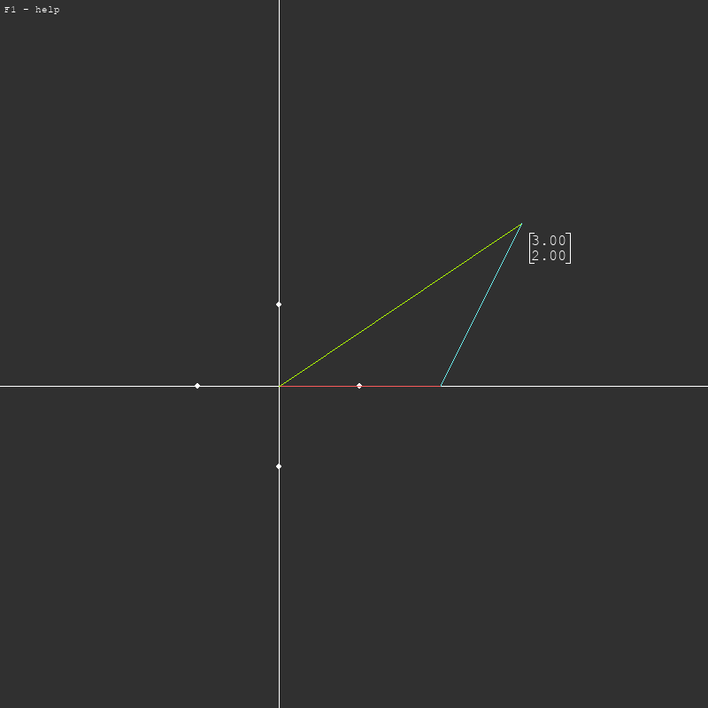

Euclidean Projector
Environment for simulating operations on Eucldean plane.
Supports linear transformations.


See Code
NetEnv
Library loaded with scripts to help you automate
your network devices in painless way.
Trigonometric Chaos Drawing
Simple project that uses the chaotic function
with trigonometric identities to draw interesting patterns.
See Code

Respect your dataframes
This library contains wrappers around scikit-learn,
it aims to preserve dataframe column names
for easier code mantaining.